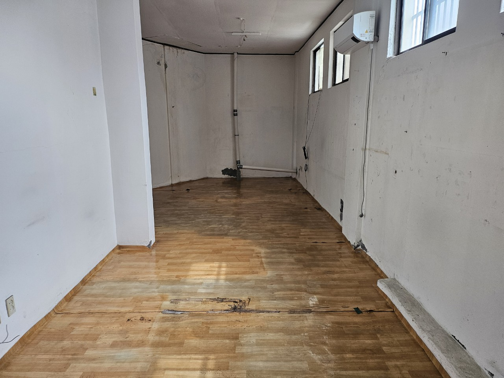
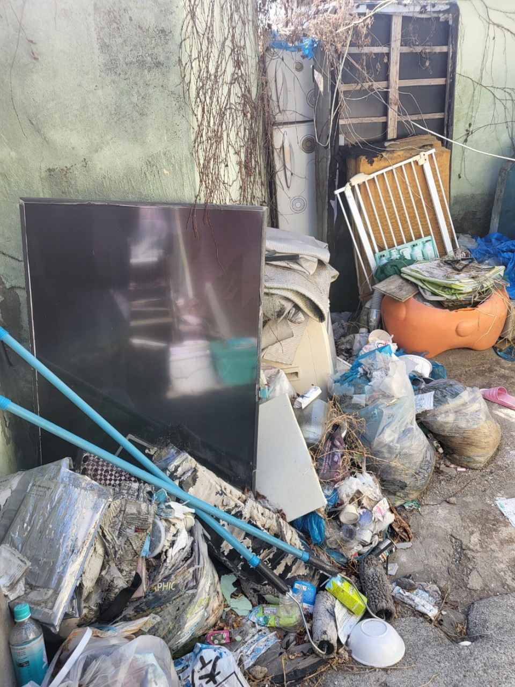
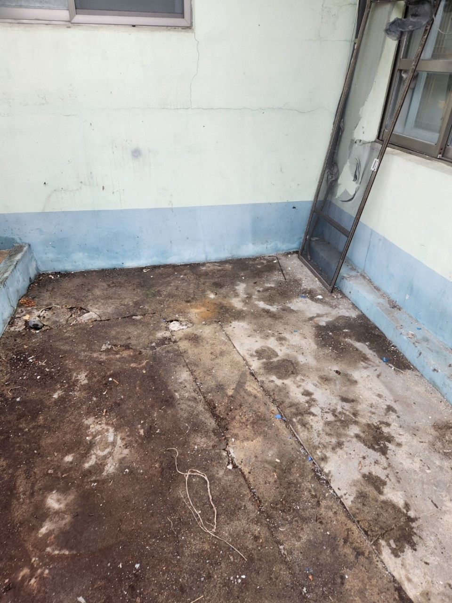
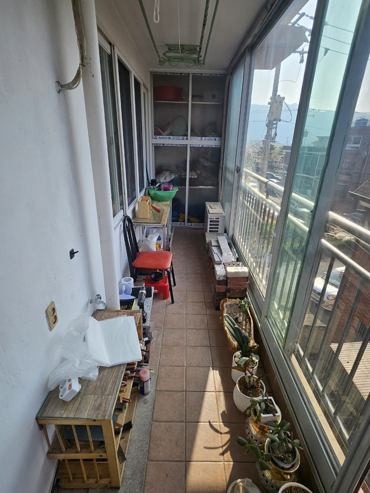
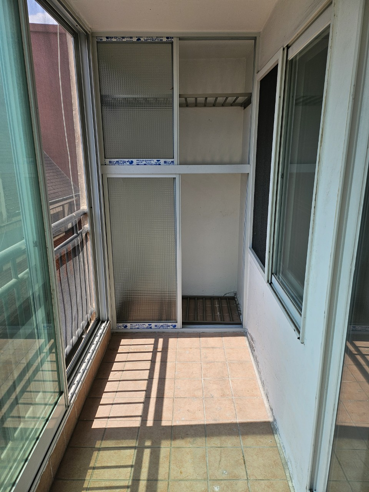
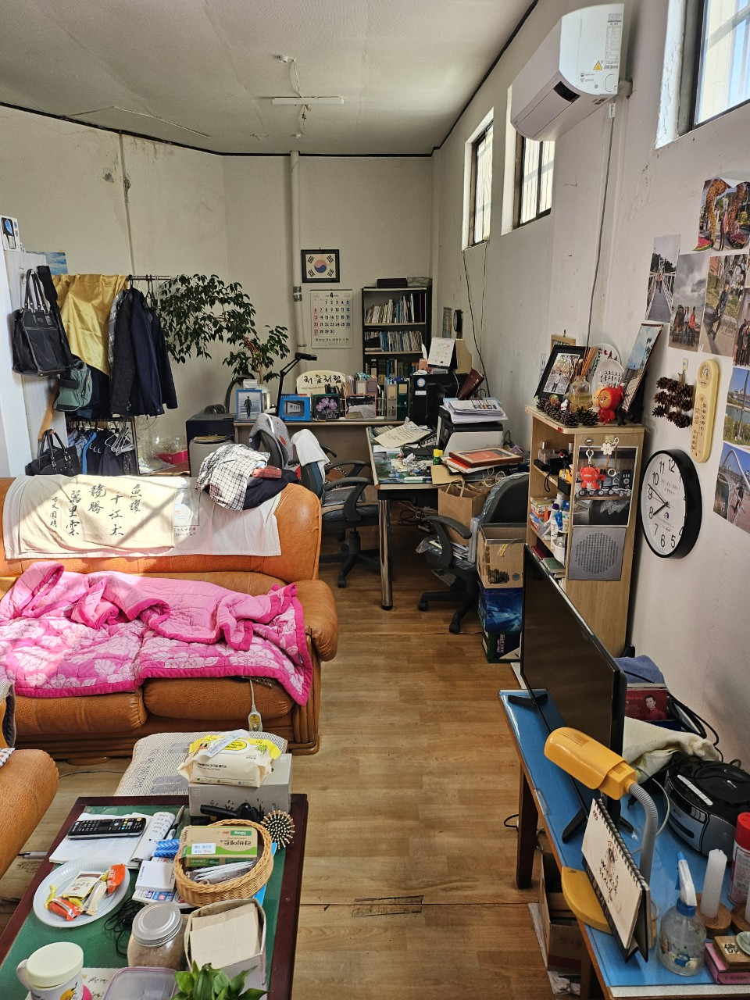

1. 경기 쓰레기집청소
장기간 쌓인 생활폐기물로 출입·청소가 어려운 공간에 필요합니다. 수원·성남·고양 등 도심 아파트뿐 아니라 남양주·포천·양평 등 외곽 단독주택도 사진으로 양과 동선을 확인한 뒤 진행합니다.
- 적치된 생활쓰레기·잡동사니 일괄 정리
- 계단·엘리베이터·진입로 조건별 작업
- 악취·위생 문제가 있는 현장 우선 상담
경기 31개 시군 안내 허브
경기도는 도시마다 현장 여건이 달라 시·군별 상세 페이지로 나누어 안내합니다. 이 허브에서 작업 지역의 시군을 고르면 쓰레기집청소·빈집정리·가정·이사·폐업폐기물 상담 내용으로 이동할 수 있습니다.

GYEONGGI HUB
경기는 수원·성남·고양·용인 같은 대도시와 가평·양평·연천처럼 외곽 시군이 함께 있어 아파트 단지, 타운하우스, 단독주택, 창고·공장형 현장이 섞여 있습니다. 차량 진입로와 하역 공간이 시군마다 달라 같은 템플릿 설명만으로는 현장 차이가 잘 드러나지 않습니다.
올바른 폐기물처리는 경기 31개 시·군 상담이 가능합니다. 상세 안내는 각 시군 페이지에서, 이 페이지에서는 원하시는 시군으로 바로 이동할 수 있게 구성했습니다.
SERVICE TYPES
올바른 폐기물처리는 현장 목적에 따라 작업 범위를 나눕니다. 경기는 대도시 아파트와 외곽 단독·창고형이 섞여 있어 종류별로 차량·인원 구성이 달라질 수 있습니다.
장기간 쌓인 생활폐기물로 출입·청소가 어려운 공간에 필요합니다. 수원·성남·고양 등 도심 아파트뿐 아니라 남양주·포천·양평 등 외곽 단독주택도 사진으로 양과 동선을 확인한 뒤 진행합니다.
매매·임대·리모델링·공실 정리 전 남은 가구와 짐을 비우는 작업입니다. 신도시 대단지와 구도심 빌라·단독은 주차·하역 여건이 달라 시군별로 일정을 조율합니다.
가구 교체, 창고·다용도실 정리, 대형 가전 배출처럼 가정에서 한꺼번에 버릴 물건이 많을 때 이용합니다. 양이 많으면 시군 대형폐기물 신고만으로 처리하기 어려운 경우가 많아 업체 반출이 효율적입니다.
이사 전후 남기거나 버릴 짐이 많을 때 필요합니다. 이사 날짜가 있으면 며칠 전 사진과 주소를 남겨 주시면 당일·익일 가능 여부까지 안내합니다.
가게·사무실·공장·창고 폐업 후 남은 집기·선반·사무용품을 반출합니다. 산업단지·상가형은 차량 진입과 작업 시간 제한이 있을 수 있어 현장 조건을 함께 확인합니다.
BEFORE & AFTER
같은 번호 전·후 사진 3세트로 정리 전후 차이를 확인할 수 있습니다.
장기간 쌓인 생활폐기물을 분류하고 반출한 현장입니다.


공실에 남은 가구와 생활용품을 한 번에 정리한 현장입니다.


이사·가구 정리 후 남은 대형 짐과 잔짐을 반출한 현장입니다.

더 많은 경기 현장 사진은 지역별 작업후기에서 확인할 수 있습니다.
PRICE
일반폐기물 30만원부터. 시군·진입로·건물 조건에 따라 달라집니다.
정확한 금액은 시군 선택 후 사진 상담으로 안내드립니다.GYEONGGI FAQ
작업 주소의 시·군 페이지를 선택하시면 됩니다. 위 31개 목록에서 바로 이동할 수 있습니다.
대부분의 시·군에서 상담 가능합니다. 진입로가 좁은 단독·창고 현장은 차량 가능 여부를 미리 확인합니다.
기본 서비스는 같지만 반출 동선과 차량 선택이 달라질 수 있어 시군 페이지와 사진 상담으로 안내합니다.
일반폐기물 30만원부터입니다. 시군과 현장 조건에 따라 달라질 수 있습니다.
REVIEW
경기 현장 작업 전·후 사진은 작업후기 모음에서 확인할 수 있습니다.
시군별 상세 안내와 별도로, 실제 정리 사례는 후기 페이지에서 확인하세요.
시·군과 현장 사진을 함께 남겨주시면 더 빠르게 안내드립니다.